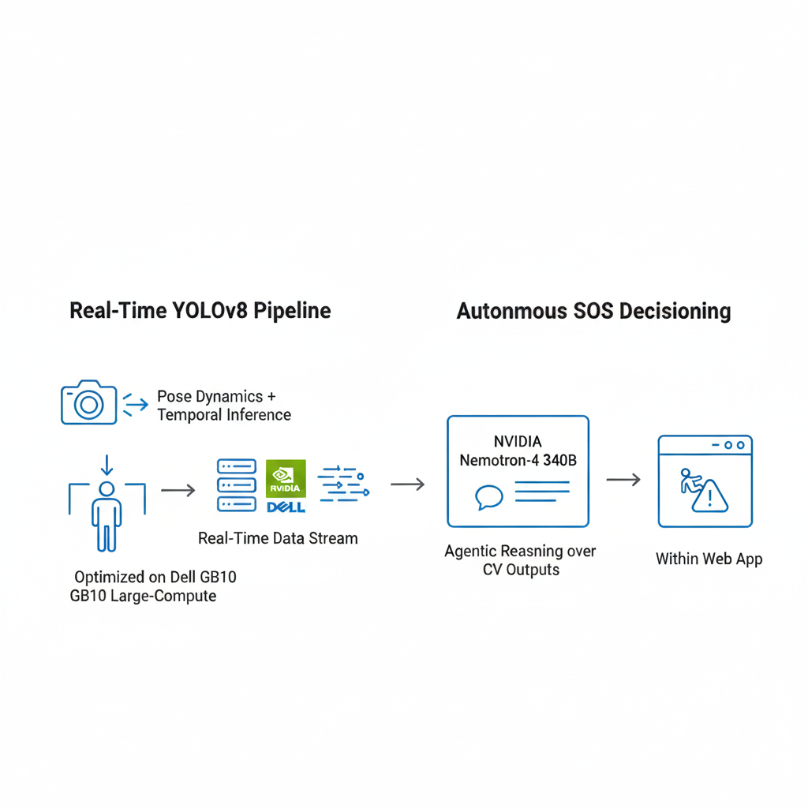
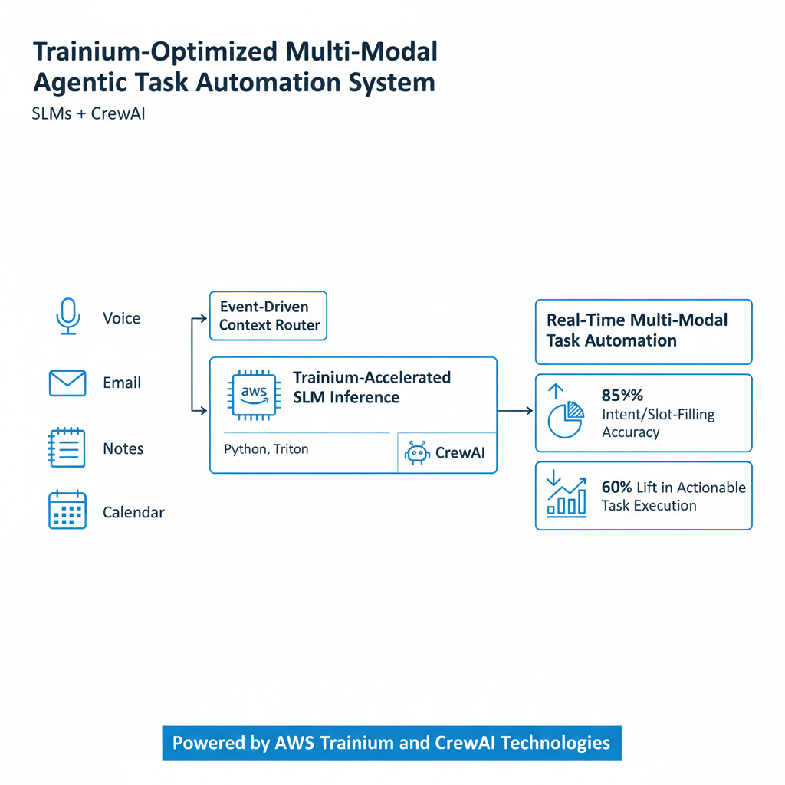
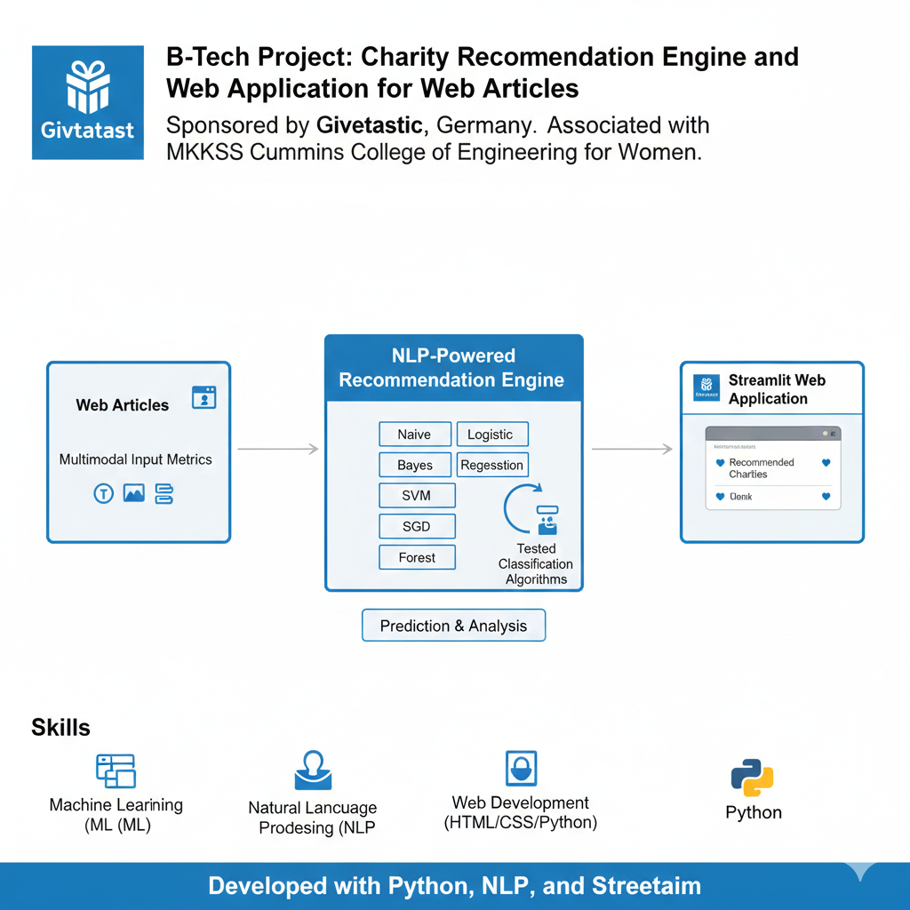
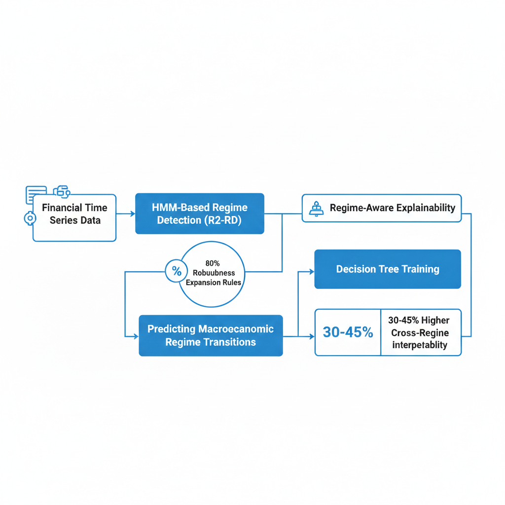

Hi! I’m currently pursuing an M.S. in Data Science at Columbia University, working on multi-agent systems in the DAPLab (The Data, Agents, and Processes Lab) at Columbia, building the foundations for a future where AI agents safely and reliably automate complex work. I am a production-focused AI/ML engineer and I have previously worked as Data Scientist II at The Boeing Company, where I spent 3 years building enterprise-scale AI products. I’ve led LLM-powered developer tools, multi-agent systems, and RAG pipelines, and designed telemetry + auto-correction loops that improved relevance and reduced failures at scale - owning systems end-to-end from data and modeling to APIs and measurable impact.
My technical interests sit at the intersection of agentic AI, system reliability, interpretability, and real-world deployment (including safety-critical environments).
Earlier, I completed my B.Tech at Cummins College of Engineering, Pune. I am originally from India, and outside of my passion for agents, I enjoy spending time outdoors, especially playing basketball, hiking, and swimming.
I’m currently seeking Summer 2026 internships in Data Science, ML/AI Engineering, AI Platforms, and ML Software Engineering, always happy to connect about building production focused systems, collaborate on ideas, or share advice. Please feel free to get in touch!
Built a privacy-first edge ML pipeline with INT8 YOLOv8 (ONNX Runtime) on mobile, publishing typed event streams under
sub-100ms, offline latency constraints. Designed a control-plane multi-agent reasoning orchestration layer using heterogeneous LLMs
(GPT-4o-mini, Gemini Flash, Claude Sonnet) to drive HITL-gated triage and escalation for safety-critical decision workflows.
@article{gundawar2025pac,
title={Strategic Vantage Selection for Learning Viewpoint-Agnostic Manipulation Policies},
author={Vasudevan, Sreevisakh and Sagar, Som and Senanayake, Ransalu},
journal={arXiv:2601.11410},
year={2026}
}

PAC Bench: Do Foundation Models Understand Prerequisites for Executing Manipulation Policies?
Atharva Gundawar*, Som Sagar*, Ransalu Senanayake Conference on Neural Information Processing Systems (NeurIPS), 2025
We introduce PAC Bench, a benchmark designed to evaluate the capability of foundational models in understanding and predicting prerequisite conditions necessary for the successful execution of robot manipulation tasks.
@article{gundawar2025pac,
title={PAC Bench: Do Foundation Models Understand Prerequisites for Executing Manipulation Policies?},
author={Gundawar, Atharva and Sagar, Som and Senanayake, Ransalu},
journal={arXiv:2506.23725},
year={2025}
}

Trustworthy Explanations for Robot Behaviors Som Sagar*, Aditya Taparia*, Harsh Mankodiya, Pranav Bidare, Yifan Zhou, Ransalu Senanayake IEEE/RSJ International Conference on Intelligent Robots and Systems (IROS), 2025
We introduce BaTCAV, a Bayesian TCAV framework with uncertainty estimations that enhances the interpretability of robotic actions across both simulation platforms and real-world robotic systems.
@article{sagar2024trustworthy,
title={Trustworthy Conceptual Explanations for Neural Networks in Robot Decision-Making},
author={Sagar, Som and Taparia, Aditya and Mankodiya, Harsh and Bidare, Pranav and Zhou, Yifan and Senanayake, Ransalu},
journal={arXiv preprint arXiv:2409.10733},
year={2024}
}

From Mystery to Mastery: Failure Diagnosis for Improving Manipulation Policies Som Sagar, Jiafei Duan, Sreevisakh V, Yifan Zhou, Heni Ben'Amor, Dieter Fox, Ransalu Senanayake Robotics: Science and Systems (RSS) Workshop on Out-of-Distribution Generalization in Robotics, 2025
We propose a systematic framework for diagnosing failure modes in robot manipulation tasks under unseen environmental conditions. It enables robust identification of failure patterns to improve generalization in robotic systems.
@inproceedings{sagar2024mystery,
title={From Mystery to Mastery: Failure Diagnosis for Improving Manipulation Policies},
author={Sagar, Som and Duan, Jiafei and Vasudevan, Sreevisakh and Zhou, Yifan, Ben'Amor, Heni and Fox, Dieter and Senanayake, Ransalu},
booktitle={RSS Workshop on Out-of-Distribution Generalization in Robotics},
year={2025}
}

Failures Are Fated, But Can Be Faded: Characterizing and Mitigating Unwanted Behaviors in Large-Scale Vision and Language Models Som Sagar, Aditya Taparia, Ransalu Senanayake International Conference on Machine Learning (ICML), 2024
— spotlight (top 3.5%)
We introduce a framework that maps the failure landscape of large vision and language models, addressing their shortcomings by realigning model behavior with human preferences—whether stylistic or ethical—to mitigate failures.
@inproceedings{sagar2024failures,
title={Failures are fated, but can be faded: characterizing and mitigating unwanted behaviors in large-scale vision and language models},
author={Sagar, Som and Taparia, Aditya and Senanayake, Ransalu},
booktitle={Proceedings of the 41st International Conference on Machine Learning},
pages={42999--43023},
year={2024}
}